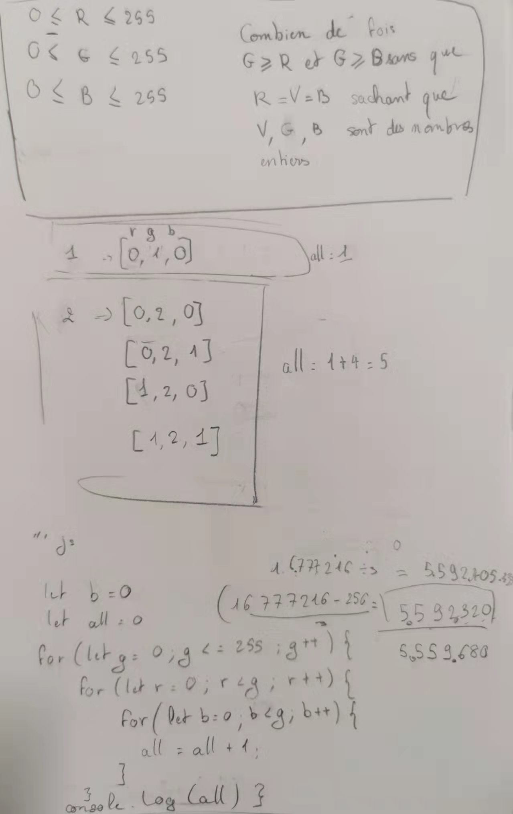

Le nombre de possibilité de la couleur verte
Si on considère dans le système rgb comme vert toutes les couleurs où la valeur V est strictement supérieur à R et B, combien existe-t-il de variante de vert?
Pour cela, j'ai considéré qu'il est plus rapide de trouver ce résultat en passant par l'ordinateur pour qu'il puisse exécuté un programme algorithmique que de chercher manuellement ce résultat.
Il y a donc 5559680 variante possible de vert dans le système rgb.
Brouillon de réflexion

````js
let r = 0;
let b = 0;
let g = 0;
let all = 0;
for (let g = 0; g <= 10; g++) {
// let green = g;
for (let r = 0; r < g; r++) {
for (let b = 0; b < g; b++) {
all = all + 1;
let rgb=[r,g,b]
console.log(rgb);
}
}
console.log(all)
}
````
Le résultat trouvé est : 5559680. Il y a donc 5559680 variante possible de vert dans le système rgb.